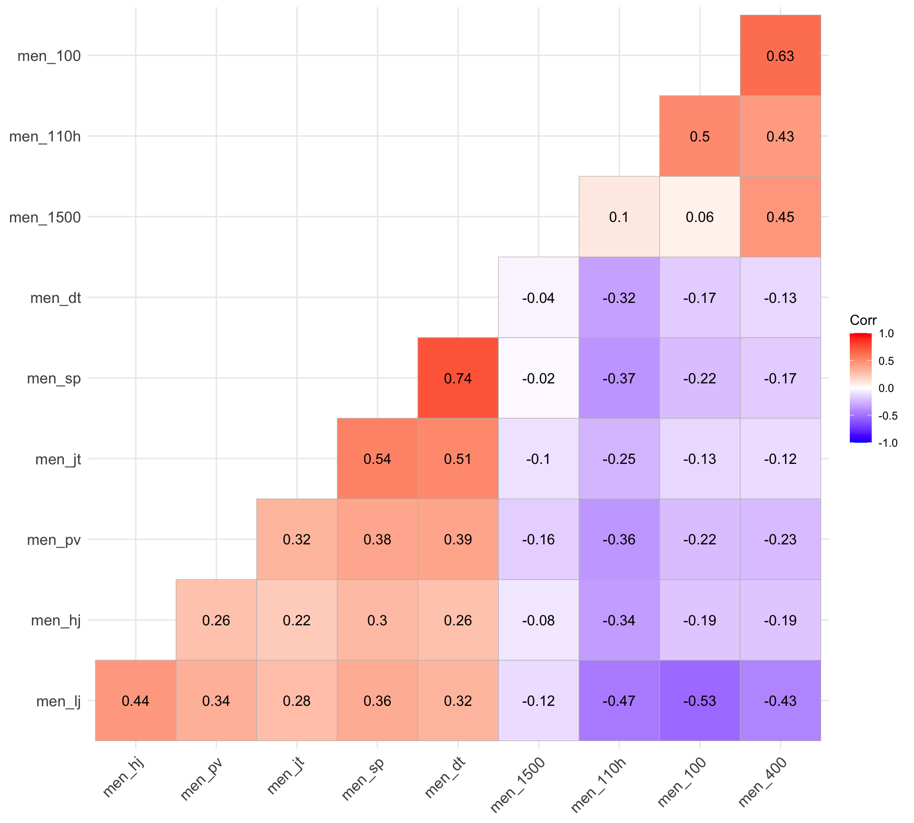

Advanced Topics: Factor Analysis
CMSACamp 2026
Department of Statistics & Data Science
Carnegie Mellon University
Motivation
How do we measure something we can’t directly observe? For instance, how do we measure…
Psychology: depression, negative emotion, stress, extraversion
Economics: quality of life, socioeconomic status
Sports: offensive ability, executive function
Education: mathematical knowledge, intelligence
These are known as latent variables: a hidden or unobserved variable that influences observed data.
- For example, mathematical knowledge will influence how you perform on a math test.
- No math test entirely captures mathematical knowledge
- For example, mathematical knowledge will influence how you perform on a math test.
- So far, we have been working with observed variables (e.g. blood pressure, weight, goals scored, etc.), so this poses new challenges.
Example: Perceived Stress Scale

Example: Perceived Stress Scale
Any of the items will be useful as an indicator of an individual’s current perceived state of stress.
- But none of them will completely capture an individual’s true level of perceived stress.
Thus, each item can be considered as an imperfect measure of perceived stress.
- By considering the items collectively, we can get an estimate of the individual’s underlying latent trait (perceived stress).
Overview of Factor Analysis
Dimension reduction: used to simplify the data structure by identifying a smaller number of underlying factors from the items
In the previous example, it is commonly accepted the 10 items load onto one factor measuring perceived stress.
Multiple factors may be needed: for example, personality is often measured by 5 factors (conscientiousness, agreebleness, extraversion, neuroticism, openness)

Overview of Factor Analysis
In creating the factors, factor analysis helps to identify items for improvement or removal because they are:
redundant (measuring the same thing as another item)
irrelevant (poorly correlated with the intended underlying constructs, causing low factor loadings)
ambiguous (cross-loading significantly on multiple factors)
Factor analysis informs the calculation of factor scores: (composite scores that combine a respondent’s scores for several related items)
These factor scores can be used for downstream analyses!
- Example: Are higher levels of perceived stress linked to greater odds of developing a clinical cold?
Data: Decathalon data
Can we use men’s decathalon scores to give each individual a measure of overall athletic ability?
- Observed items: performance in each event
- Latent variable: overall atheletic ability
library(tidyverse)
dec_performances <- read_csv("https://raw.githubusercontent.com/36-SURE/2026/main/data/dec_performances.csv")
decathalon <- dec_performances |>
dplyr::select(men_100, men_lj, men_sp, men_hj, men_400, men_110h, men_dt, men_pv, men_jt, men_1500) |>
separate(men_1500, into = c("min", "sec", "remove"), sep = ":", convert = TRUE) %>%
mutate(men_1500 = min * 60 + sec) %>%
select(-min, -sec, -remove) Exploring event similarities
Why are certain variables positively correlated and others negatively correlated?

Introducing model structure
Every event depends partly on both overall athletic ability and event-specific influences.
For example: \(X_{100m} = F + \varepsilon\)
- \(X_{100m}\): 100m time
- \(F\): overall athletic ability
- \(\varepsilon_{100m}\): unexplained variance in 100m time that overall athletic ability cannot predict
Similarly, \(X_{110h} = F + \varepsilon\)
- \(X_{100h}\): 110m high hurdles time
- \(F\): overall athletic ability
- \(\varepsilon_{110h}\): unexplained variance in 110m high hurdles time that overall athletic ability cannot predict
Introducing model structure
Overall athletic ability may be a better predictor of performance in some events than others. The loading tells us how strongly athletic ability influences performance in a particular event.
\[X_{100m} = \lambda_{100m}F+ \varepsilon_{100m}\] \[X_{110h} = \lambda_{110h}F+ \varepsilon_{110h}\]
When all observed variables and common factors are standardized to have unit variance, the loading behaves like a correlation.
Deriving covariance
Two events should be correlated if they both depend on the latent factor (overall athletic ability).
\[\text{Cov}(100m, 110h) = \text{Cov}(\lambda_{100m}F+ \varepsilon_{100m}, \lambda_{110h}F+ \varepsilon_{110h})\]
\[ = \text{Cov}(\lambda_{100m}F, \lambda_{110h}F) + \text{Cov}(\lambda_{100m}F, \varepsilon_{110h}) + \text{Cov}(\lambda_{110h}F, \varepsilon_{100m}) + \text{Cov}(\varepsilon_{110h}, \varepsilon_{100m})\]
Factor analysis makes key assumptions that help us simplify this
The factor is unrelated to each item’s residual: \(\text{Cov}(F, \varepsilon_{j}) = 0\)
Residuals of different items are uncorrelated: \(\text{Cov}(\varepsilon_{j}, \varepsilon_{k}) = 0\)
\[\text{Cov}(100m, 110h) = \text{Cov}(\lambda_{100m}F, \lambda_{110m}F)\] \[= \lambda_{100m}\lambda_{110m}\text{Cov}(F, F) = \lambda_{100m}\lambda_{110m}\text{Var}(F)\]
Deriving covariance
We saw \(\text{Cov}({100m}, {110h}) = \lambda_{100m}\lambda_{110m}\text{Var}(F)\).
According to our one-factor model, the only reason that two items are correlated is because they share the same latent factor (overall athletic ability).
If either loading is small, \(\lambda_{100m}\lambda_{110m}\) is small, so the covariance explained by the factor is small.
If either loading is zero, \(\text{Cov}(100m, 110h) = 0\), and the factor contributes no covariance between the two events.
If we observe correlations in the data that the factor cannot explain, that suggests our one-factor model is missing something.
For example, suppose 100m time and 110m high hurdles time are more highly correlated than our one-factor model predicts.
In addition to overall athletic ability, these events may share another underlying trait (e.g. speed).
The one-factor model cannot explain this extra correlation, so we may need to add another factor.
Specifying model structure
\[\begin{bmatrix} X_{100m} \\ X_{jav} \\ X_{400m} \\ X_{sp} \\ X_{110h} \\ X_{lj} \\ X_{hj} \\ X_{1500m} \\ X_{dt} \\ X_{pv} \end{bmatrix} = \begin{bmatrix} \lambda_{100m1} & \lambda_{100m2} \\ \lambda_{jav1} & \lambda_{jav2} \\ \lambda_{400m1} & \lambda_{400m2}\\ \lambda_{sp1} & \lambda_{sp2}\\ \lambda_{110h1} & \lambda_{110h2} \\ \lambda_{lj1} & \lambda_{lj2}\\ \lambda_{hj1} & \lambda_{hj2}\\ \lambda_{1500m1} & \lambda_{1500m2} \\ \lambda_{dt1} & \lambda_{dt2} \\ \lambda_{pv1} & \lambda_{pv2} \end{bmatrix} \begin{bmatrix} F_1 \\ F_2 \end{bmatrix} + \begin{bmatrix} \varepsilon_{100m} \\ \varepsilon_{jav} \\ \varepsilon_{400m} \\ \varepsilon_{sp} \\ \varepsilon_{110h} \\ \varepsilon_{lj} \\ \varepsilon_{hj} \\ \varepsilon_{1500m} \\ \varepsilon_{dt} \\ \varepsilon_{pv} \end{bmatrix}\]
\[\mathbf{x} = \mathbf{\Lambda f} + \boldsymbol{\varepsilon}\]
Fitting a factor model
Factor Analysis using method = minres
Call: fa(r = decathalon)
Standardized loadings (pattern matrix) based upon correlation matrix
MR1 h2 u2 com
men_100 -0.55 0.308 0.69 1
men_lj 0.69 0.474 0.53 1
men_sp 0.66 0.441 0.56 1
men_hj 0.47 0.223 0.78 1
men_400 -0.52 0.273 0.73 1
men_110h -0.66 0.436 0.56 1
men_dt 0.61 0.375 0.62 1
men_pv 0.54 0.288 0.71 1
men_jt 0.51 0.260 0.74 1
men_1500 -0.20 0.041 0.96 1
MR1
SS loadings 3.12
Proportion Var 0.31
Mean item complexity = 1
Test of the hypothesis that 1 factor is sufficient.
df null model = 45 with the objective function = 3.56 with Chi Square = 45433.46
df of the model are 35 and the objective function was 1.46
The root mean square of the residuals (RMSR) is 0.13
The df corrected root mean square of the residuals is 0.15
The harmonic n.obs is 12762 with the empirical chi square 9532.3 with prob < 0
The total n.obs was 12762 with Likelihood Chi Square = 18633.64 with prob < 0
Tucker Lewis Index of factoring reliability = 0.473
RMSEA index = 0.204 and the 90 % confidence intervals are 0.202 0.207
BIC = 18302.74
Fit based upon off diagonal values = 0.85
Measures of factor score adequacy
MR1
Correlation of (regression) scores with factors 0.91
Multiple R square of scores with factors 0.83
Minimum correlation of possible factor scores 0.67Factor Analysis using method = minres
Call: fa(r = decathalon_scale)
Standardized loadings (pattern matrix) based upon correlation matrix
MR1 h2 u2 com
men_100 -0.55 0.308 0.69 1
men_lj 0.69 0.474 0.53 1
men_sp 0.66 0.441 0.56 1
men_hj 0.47 0.223 0.78 1
men_400 -0.52 0.273 0.73 1
men_110h -0.66 0.436 0.56 1
men_dt 0.61 0.375 0.62 1
men_pv 0.54 0.288 0.71 1
men_jt 0.51 0.260 0.74 1
men_1500 -0.20 0.041 0.96 1
MR1
SS loadings 3.12
Proportion Var 0.31
Mean item complexity = 1
Test of the hypothesis that 1 factor is sufficient.
df null model = 45 with the objective function = 3.56 with Chi Square = 45433.46
df of the model are 35 and the objective function was 1.46
The root mean square of the residuals (RMSR) is 0.13
The df corrected root mean square of the residuals is 0.15
The harmonic n.obs is 12762 with the empirical chi square 9532.3 with prob < 0
The total n.obs was 12762 with Likelihood Chi Square = 18633.64 with prob < 0
Tucker Lewis Index of factoring reliability = 0.473
RMSEA index = 0.204 and the 90 % confidence intervals are 0.202 0.207
BIC = 18302.74
Fit based upon off diagonal values = 0.85
Measures of factor score adequacy
MR1
Correlation of (regression) scores with factors 0.91
Multiple R square of scores with factors 0.83
Minimum correlation of possible factor scores 0.67Determining number of factors
Rotation
Extracting factor scores
Interpretations and assumptions
One standard deviation increase; linearity..
Using factor scores in downstream analyses
Two main types of factor analysis
Exploratory factor analysis: explores and summmarises underlying correlational structure for a dataset
Confirmatory factor analysis: tests correlational structure of a data set against a hypothesised structure and rates the ‘goodness of fit’